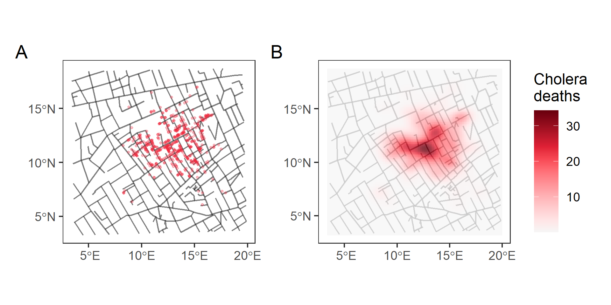

This lesson requires familiarity with {ggplot2}: if you need to brush up, have a look at our introductory course on data visualization.
4 Density map
What is it?
• Thematic map where colours represent the intensity of a value,
• It does not use defined regions or geopolitical boundaries to group data.
• It shows ‘hot spots’, or
• Areas with a high density or concentration of points.

Figure 4. (A). John Snow’s Dot distribution map with overlapping Point pattern data. (B) Density map from John Snow’s Dot distribution map Point pattern data.
How to plot it?
• Let’s use afriairports, from {afrilearndata}, which contains the locations from African airports.
• With geom_sf() function we get overlapping points:
Code
ggplot(data = afriairports) +geom_sf()
• A Density map requires four main steps:
epihelper::st_coordinates_tidy() to retrieve the point coordinates.
ggplot() defining new coordinate column names X and Y,
geom_bin_2d() to depict the number of airports per area,
coord_sf() to transform axis aspect ratio and coordinate format.
Code
afriairports %>%# 👉 (1) extract coordinatesst_coordinates_tidy() %>%# 👉 (2) start ggplotggplot(aes(x = X, y = Y)) +# 👉 (3) with a new geom functiongeom_bin_2d() +# 👉 (4) transform axiscoord_sf()
Create a Density map with the pcrime data read from the pcrime.rds local file.
Code
pcrime <-read_rds(here("data/pcrime.rds"))
Code
pcrime
Use the geom_bin_2d(), to portrait the number of crimes per area, faceted by the two types of crime in the column marks.
Code
pcrime %>%st_coordinates_tidy() %>%ggplot(aes(x= X, y = Y)) +geom_bin_2d() +coord_sf() +facet_wrap(~marks)
How to use it?
• Used with Environmental data,
• Altitude, air pollution or rainfall data.
Figure 5. Altitude data from The Gambia.
• Used for spatially continuous disease prevalence surfaces.
• Moraga et al. (2019) for malaria in children at 65 villages in The Gambia
Figure 6. Predicted malaria prevalence in The Gambia.
• They used a geostatistical model to predict the disease prevalence at unobserved locations.
What alternative plots do we have?
• Two {ggplot2} alternatives: 3 • Use geom_density_2d_filled() for a contoured density plot of "count" values:
Code
afriairports %>%# (1) extract coordinatesst_coordinates_tidy() %>%# (2) start ggplotggplot(aes(x = X, y = Y)) +# 👉 with an alternative geom function 👈geom_density_2d_filled(contour_var ="count") +# (4) transform axiscoord_sf()
• Use stat_density_2d() to create a continuous surface of count values:
Code
afriairports %>%# (1) extract coordinatesst_coordinates_tidy() %>%# (2) start ggplotggplot(aes(x = X, y = Y)) +# 👉 with an alternative geom function 👈stat_density_2d(geom ="raster",mapping =aes(fill =after_stat(count)),contour =FALSE) +scale_fill_viridis_c() +# (4) transform axiscoord_sf()
Use the st_coordinates_tidy() function to extract the X and Y coordinates from the pcrime dataset.
This will be useful to built a Density map with geom_density_2d_filled() and portrait the number of crimes per area, faceted by the two types of crime in the column marks.
Baumer, Benjamin S., Kaplan, Daniel T., and Horton, Nicholas J. Modern Data Science with R. Chapter 17: Working with geospatial data. (2021). Retrieved 05 June 2022, from https://mdsr-book.github.io/mdsr2e/ch-spatial.html
---title: 'Density Map'author: - name: 'Andree Valle Campos' - name: 'Laure Vancauwenberghe'date: '2024-12-3'format: html: code-fold: true code-tools: true number-sections: true toc: true css: global/style/style.css---```{r, include = FALSE, warning = FALSE, message = FALSE}# Load packages if(!require(pacman)) install.packages("pacman")pacman::p_load(tidyverse, knitr, here)# Source functions source(here("global/functions/misc_functions.R"))# knitr settingsknitr::opts_chunk$set(warning = F, message = F, class.source = "tgc-code-block", error = T)``````{r,echo=FALSE}ggplot2::theme_set(new = theme_bw())options(scipen=10000)```------------------------------------------------------------------------## Introduction• Difficulty to visualize patterns.• Dot maps can have **overlapped points.**• Lines may not be explicit enough in providing *geographic context*.{width="676"}• Today, we are going to learn:- How to built *Density maps* to avoid overlaps, and- How to add *Basemaps* for Google Maps-like backgrounds.------------------------------------------------------------------------## Learning objectives1. Identify one more type of Thematic map (**Density maps**) used by epidemiologist to visualize *overlapping* Geospatial data.2. Complement *Thematic maps* with **Basemaps** for Google Maps-like backgrounds using the `annotation_map_tile()` function, from the `{ggspatial}` package.------------------------------------------------------------------------## PrerequisitesThis lesson requires the following packages:```{r,eval=TRUE,echo=TRUE,message=FALSE}if(!require('pacman')) install.packages('pacman')pacman::p_load_gh("afrimapr/afrilearndata")pacman::p_load_gh("avallecam/epihelper")pacman::p_load(ggspatial, ggplot2, tibble, terra, dplyr, spData, sf, prettymapr)```This lesson requires familiarity with `{ggplot2}`: if you need to brush up, have a look at our introductory course on data visualization.------------------------------------------------------------------------## Density map### What is it? {.unnumbered}• Thematic map where colours represent the *intensity* of a value,• It does not use defined regions or geopolitical boundaries to group data.• It shows **'hot spots'**, or• Areas with a high *density* or *concentration* of points.### How to plot it? {.unnumbered}• Let's use `afriairports`, from `{afrilearndata}`, which contains the locations from African airports.• With `geom_sf()` function we get *overlapping points*:```{r,eval=TRUE,echo=TRUE}ggplot(data = afriairports) + geom_sf()```• A *Density map* requires four main steps:1. `epihelper::st_coordinates_tidy()` to *retrieve* the point coordinates.2. `ggplot()` defining *new* coordinate column names `X` and `Y`,3. `geom_bin_2d()` to depict the *number of airports per area*,4. `coord_sf()` to *transform* axis aspect ratio and coordinate format.```{r,eval=TRUE,echo=TRUE}afriairports %>% # 👉 (1) extract coordinates st_coordinates_tidy() %>% # 👉 (2) start ggplot ggplot(aes(x = X, y = Y)) + # 👉 (3) with a new geom function geom_bin_2d() + # 👉 (4) transform axis coord_sf()```::: r-practiceCreate a Density map with the `pcrime` data read from the `pcrime.rds` local file.```{r}pcrime <-read_rds(here("data/pcrime.rds"))``````{r,eval=FALSE}pcrime```Use the `geom_bin_2d()`, to portrait the number of crimes per area, faceted by the two types of crime in the column `marks`.```{r,eval=FALSE}pcrime %>% st_coordinates_tidy() %>% ggplot(aes(x= X, y = Y)) + geom_bin_2d() + coord_sf() + facet_wrap(~marks)```:::### How to use it? {.unnumbered}• Used with *Environmental data*,• Altitude, air pollution or rainfall data.{width="556"}• Used for *spatially continuous disease prevalence surfaces*.• Moraga et al. (2019) for malaria in children at 65 villages in The Gambia{width="557"}• They used a geostatistical model to predict the *disease prevalence* at *unobserved locations*.### What alternative plots do we have? {.unnumbered}• Two `{ggplot2}` alternatives:3• Use `geom_density_2d_filled()` for a contoured density plot of `"count"` values:```{r}afriairports %>%# (1) extract coordinatesst_coordinates_tidy() %>%# (2) start ggplotggplot(aes(x = X, y = Y)) +# 👉 with an alternative geom function 👈geom_density_2d_filled(contour_var ="count") +# (4) transform axiscoord_sf()```• Use `stat_density_2d()` to create a continuous surface of `count` values:```{r}afriairports %>%# (1) extract coordinatesst_coordinates_tidy() %>%# (2) start ggplotggplot(aes(x = X, y = Y)) +# 👉 with an alternative geom function 👈stat_density_2d(geom ="raster",mapping =aes(fill =after_stat(count)),contour =FALSE) +scale_fill_viridis_c() +# (4) transform axiscoord_sf()```::: r-practiceUse the `st_coordinates_tidy()` function to extract the X and Y coordinates from the `pcrime` dataset.This will be useful to built a Density map with `geom_density_2d_filled()` and portrait the number of crimes per area, faceted by the two types of crime in the column `marks`.```{r,eval=FALSE}pcrime %>% st_coordinates_tidy() %>% ggplot(aes(x = X, y = Y)) + geom_density_2d_filled(contour_var = "count") + coord_sf() + facet_wrap(~marks)```:::------------------------------------------------------------------------## Basemaps• With lines for *Physical features* we get partial geographical context.• We can overlay our map over *Google Maps-like* background.### In a Dot map• Let's use the London cholera outbreak Dot map,{width="416"}• We can overlay it on the London street map.• `{ggspatial}` lets us do it.• Let's use `annotation_map_tile()` to add a layer of **map tiles** from [Open Street Map](https://www.openstreetmap.org/).```{r, results = "hide", warning = FALSE, message = FALSE}cholera_deaths <- read_rds(here("data/cholera_deaths.rds"))ggplot(data = cholera_deaths) + # 👉 add a basemap 👈 annotation_map_tile(zoomin = 0) + # continue with ggplot geom_sf(mapping = aes(size = Count), alpha = 0.5)```• Number of deaths per location using `size`.::: r-practiceAdd a Basemap to a Dot map using the `africapitals` object and the `annotation_map_tile()` function.```{r,eval=FALSE,echo=TRUE}ggplot(data = africapitals) + annotation_map_tile(zoomin = 0) + geom_sf(mapping = aes(size = pop), alpha = 0.5)```:::### In a Density map• Let's use the `pcrime` object and the `annotation_map_tile()` function.```{r}pcrime %>%# (1) extract coordinatesst_coordinates_tidy() %>%# (2) start ggplotggplot(aes(x = X, y = Y)) +# 👉 add a basemap 👈annotation_map_tile(zoomin =0) +# (3) with a new geom functiongeom_bin_2d() +# (4) transform axiscoord_sf() +# facetfacet_wrap(~marks)```::: watch-out• The basemap must be bellow the `geom_*` function!:::::: r-practiceUse two functions, `annotation_map_tile()` and `geom_bin_2d()`, to add a Basemap to a Density map using the `afriairports` object.```{r,eval=FALSE,echo=TRUE}afriairports %>% st_coordinates_tidy() %>% ggplot(aes(x = X, y = Y)) + annotation_map_tile(zoomin = 0) + geom_bin_2d() + coord_sf()```:::------------------------------------------------------------------------## Wrap up• We have learned about *Density maps* to avoid overlapping spatial points.• How to add *Basemaps* for Google Maps-like backgrounds.• But, How can we use data from **external** GIS software?• Follow along with the lessons to find how to train these skills!------------------------------------------------------------------------## Contributors {.unlisted .unnumbered}The following team members contributed to this lesson:`r tgc_contributors_list(ids = c("avallecam", "lolovanco"))`------------------------------------------------------------------------## References {.unlisted .unnumbered}Some material in this lesson was adapted from the following sources:- *Batra, Neale, et al. (2021). The Epidemiologist R Handbook. Chapter 28: GIS Basics*. (2021). Retrieved 01 April 2022, from <https://epirhandbook.com/en/gis-basics.html>- *Lovelace, R., Nowosad, J., & Muenchow, J. Geocomputation with R. Chapter 2: Geographic data in R*. (2019). Retrieved 01 April 2022, from <https://geocompr.robinlovelace.net/spatial-class.html>- *Moraga, Paula. Geospatial Health Data: Modeling and Visualization with R-INLA and Shiny. Chapter 2: Spatial data and R packages for mapping*. (2019). Retrieved 01 April 2022, from <https://www.paulamoraga.com/book-geospatial/sec-spatialdataandCRS.html>- *Baumer, Benjamin S., Kaplan, Daniel T., and Horton, Nicholas J. Modern Data Science with R. Chapter 17: Working with geospatial data*. (2021). Retrieved 05 June 2022, from <https://mdsr-book.github.io/mdsr2e/ch-spatial.html>`r tgc_license()`------------------------------------------------------------------------## Answer Key {.unnumbered}### Practice 1 {.unlisted .unnumbered}```{r}pcrime %>% epihelper::st_coordinates_tidy() %>%ggplot(aes(x = X,y = Y)) +geom_bin_2d() +coord_sf() +facet_wrap(~marks)```### Practice 2 {.unlisted .unnumbered}```{r}pcrime %>% epihelper::st_coordinates_tidy() %>%ggplot(aes(x = X,y = Y)) +geom_density_2d_filled() +coord_sf() +facet_wrap(~marks)```### Practice 3 {.unlisted .unnumbered}```{r}ggplot(data = africapitals) +annotation_map_tile() +geom_sf(mapping =aes(size = pop), alpha =0.5)```### Practice 4 {.unlisted .unnumbered}```{r}afriairports %>% epihelper::st_coordinates_tidy() %>%ggplot(aes(x = X, y = Y)) +annotation_map_tile() +geom_bin_2d() +coord_sf()```